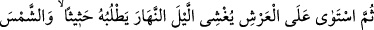
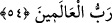

GÖKLERİN VE YERİN
YARATILMASI
54. Şüphesiz ki Rabbiniz, gökleri ve yeri altı günde yaratan, sonra Arş’a istivâ
eden, geceyi, durmadan kendisini kovalayan gündüze bürüyüp örten; güneşi, ayı ve
yıldızları emrine boyun eğmiş durumda yaratan Allah’tır. Bilesiniz ki, yaratmak da
emretmek de O’na mahsustur. Âlemlerin Rabbi Allah ne yücedir!
“Rabb’iniz” Hitap, Allah’dan başka rabler edinen Mekke kâfirlerinedir. “O” bütün
kemal sıfatlarını kendinde toplayan “Allah’tır ki; gökleri ve yeri” önceden bir benzeri
olmadan “altı günde” yani altı dönemde “yarattı” İsteseydi bir lahzadan daha az bir
zamanda yaratabilirdi. Fakat kullarına, yaptıkları işlerde teennî ile hareket etmelerini
öğretmek üzere böyle yapmıştır.
Mesnevî’de şöyle denilmiştir:
Acele ve telaş şeytanın hilesidir
Sabır ve tedbir ise Allah’ın adetidir
Bu yer ve gökleri Allah teennî ile altı günde yarattı
Yoksa Allah buna kadirdi, “kün” der demez yüzlerce yer ve gök yaratırdı
Bu teennî sana dilediğin şeyi yavaş fakat
Sağlam bir halde yapmanı öğretmek içindir
Denilir ki: Acelecilik iyi bir şey değildir. Ama şu hususlarda acele etmek gerekir:
Günahlardan tevbe etmek, vâdesi dolan borcu ödemek, misafire ikramda bulunmak,
büluğ çağına gelmiş bekârı evlendirmek, ölüyü defnetmek ve cünüplükten temizlenmek.
Bil ki Allah Teâlâ, kadir ve yaratıcılık vasfıyla gökleri ve yeri yoktan var etti.
Müdebbir ve Hakîm sıfatlarının gereği olarak da onları altı günde yarattı. Altı günde şu
altı çeşit mahlûku yarattı:
1. Mücerred ruhlar,